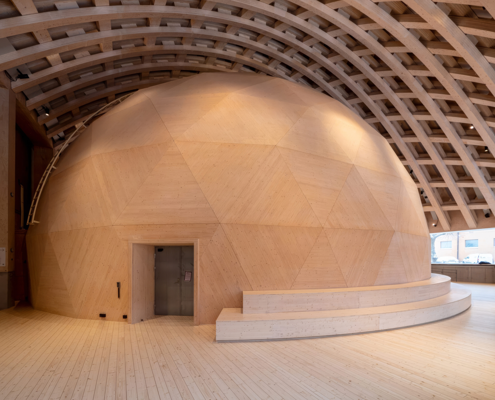
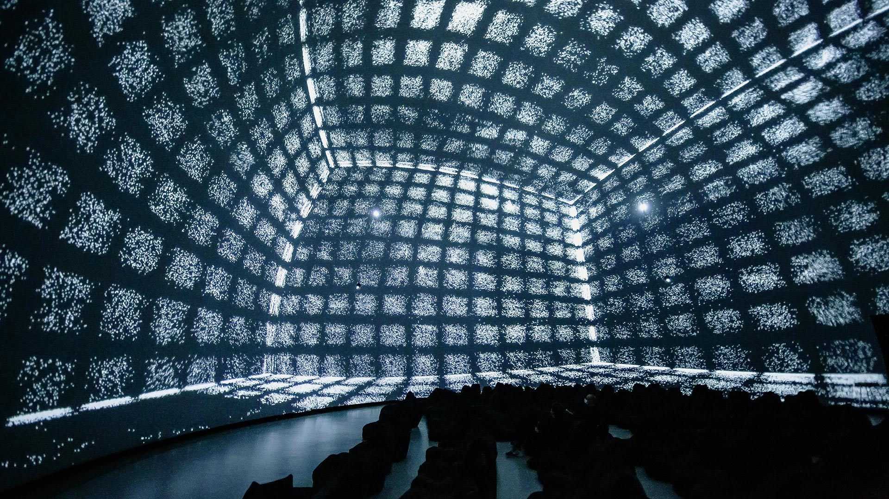
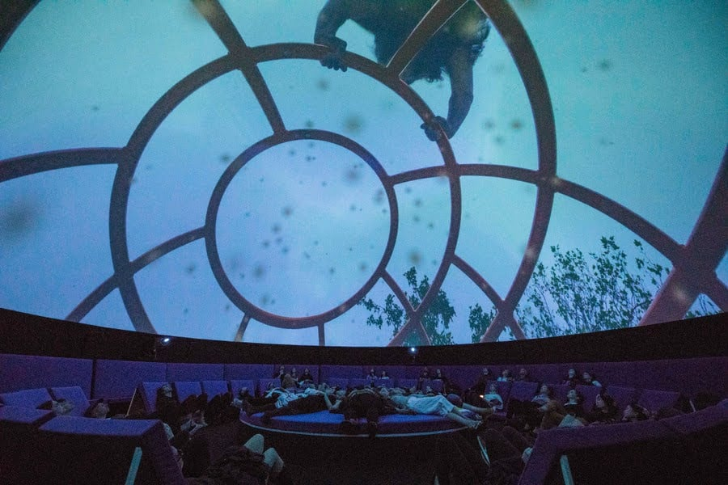
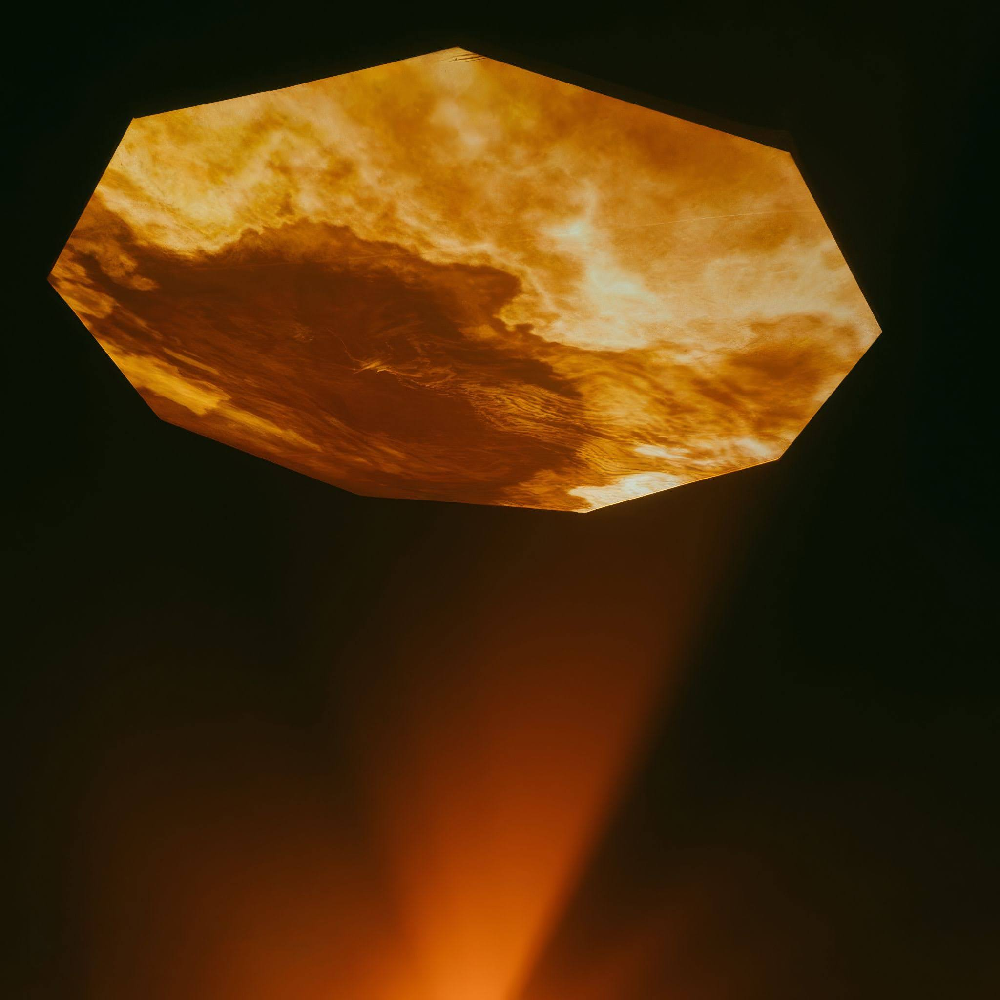

dome dreaming
fulldome film festival
Stockholm, 7–9 May
·
Malmö, 12/13 May (TBC).
Programme announced in February
info@domedreaming.com
dome dreaming is an interdisciplinary festival divided between Wisdome Stockholm and Malmö, two newly built state-of-the-art domes. Featuring fulldome visuals and ambisonic sound, it showcases narrative films, live performances, and interactive installations. The festival explores the potential of the dome format through Nordic-Baltic collaboration, a curated screening programme, open call and student participation.

Wisdome Stockholm

THE WISDOME PROJECT
Wisdome connects science centers, universities, and research institutions to explore new ways of engaging audiences through audiovisual production. In 2022–2023, Tekniska museet and Malmö Museer introduced cutting-edge dome theaters with 180-degree visuals and ambisonic sound. While Wisdome centers on scientific visualisation, its potential goes further. Dome theaters are now a platform for artistic expression in Sweden, opening the door for cross-disciplinary collaboration.
THE DREAMING ETHOS
Drawing from expanded cinema, visions of the present, and black mountain college—three movements that redefined artistic and technological boundaries. The festival adapts these radical ideas to the dome format, transforming cinema from a passive experience into an immersive 180-degree space where storytelling, sound, and visuals converge.
Despite Sweden's five Wisdome domes, funding and recognition for experimental film and dome content remain scarce—especially beyond science and education.
BEYOND WISDOME
Domes have long served as a canvas for artistic exploration and collaboration. In the 1960s, Steve VanDerBeek created Movie-Drome—a pioneering prototype for networked image communication, made as a collaborative tool long before the Internet. Buckminster Fuller, too, reimagined the potential of domes, using them as structures to unite artistic disciplines and push the boundaries of architecture.
Since 1996, La SAT in Montreal has been a beacon for dome innovation. Each week they invite musicians and visual artists, opening up the dome. Other notable initiatives, such as Visions of the Now (2015–2017), The New Infinity in Berlin (2018–2021), and the Lumen Project (2019–) in Eric Ericssonhallen, have further expanded the scope of immersive experiences.
DOME DREAMING stands on the shoulder of giants, inspired by these pioneering efforts, but with an eye toward alternative paths. By pushing the limits of immersive media, we aim to explore the unique, transformative potential of the dome while creating our own. To learn more, read the full presentation.


La SAT Montreal

The New Infinity
dome dreaming is a non-profit festival produced by Jonas Johansson, Fredrik Edström and Sebastian Häger, in collaboration with Nordic Audiovisual Artists, Nonagon, Aavistus, Kokong and Baltic Analog Lab. Supported by Tekniska museet, Malmö Stad and Region Stockholm.



Nonagon

3D model by Ashley Reed. Original dome visualiser by Per-Olov Jernberg. Design and development by Jonas Johansson.